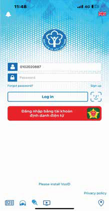
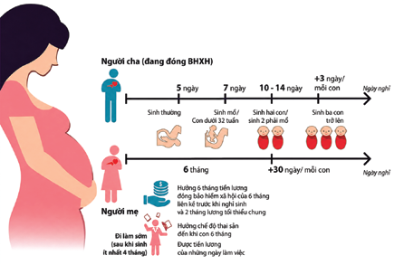

Chương 1:
Cơ sở y tế và các chính sách bảo hiểm
Mục lục:
-
Giới thiệu: Lời nói đầu và hướng dẫn sử dụng sổ tay


-
Chương 1: Cơ sở y tế và các chính sách bảo hiểm
- Câu 1. Tôi là người lao động của một công ty, hiện đang gặp vấn đề sức khoẻ và muốn đi khám bệnh. Tôi có thể khám, chữa bệnh ở đâu?
- Câu 2. Trước khi đi khám, nếu có thắc mắc, tôi có thể hỏi thông tin từ ai?
- Câu 3. Khi đi khám, tôi cần mang theo giấy tờ gì?
- Câu 4. Nếu tôi được chẩn đoán mắc bệnh mà cần phải nằm viện điều trị, tôi sẽ phải làm gì?
- Câu 5. Nếu bệnh tình của tôi không tiến triển, tôi có thể chuyển sang điều trị tại một bệnh viện hoặc cơ sở y tế khác không?
- Câu 6. Tôi cần làm gì để được chuyển viện?
- Câu 7. Làm thế nào để mua thuốc? Tôi có thể mua thuốc trực tiếp tại nhà thuốc, trên website hoặc ứng dụng di động mà không cần đơn thuốc của bác sĩ được không?
- Câu 8. Tôi thấy trên các trang mạng xã hội như Facebook và YouTube có nhiều quảng cáo về các phương pháp chữa bệnh, gồm cả thuốc tây y và đông y. Tôi có nên tin tưởng và liên hệ với những nguồn thông tin này không?
- Câu 9. Tôi từ nơi khác tới làm việc và có ký hợp đồng lao động với công ty. Vậy sau bao lâu làm việc tại công ty thì tôi được đóng BHXH bắt buộc?
- Câu 10. Tôi có được đăng ký tham gia bảo hiểm xã hội bắt buộc và bảo hiểm thất nghiệp không? Nếu được thì ai sẽ đăng ký cho tôi và số tiền tôi phải đóng hàng tháng được tính như thế nào?
- Câu 11. Tôi có thể kiểm tra bằng cách nào để biết mình đã được công ty đăng ký tham gia BHXH bắt buộc và bảo hiểm thất nghiệp hay chưa, cũng như việc đóng bảo hiểm đã đúng và đủ hay không?
- Câu 12. Công ty đã đăng ký cho tôi tham gia BHXH bắt buộc. Vậy tôi có thể hưởng các chế độ, trợ cấp như thế nào và các chế độ đó bao gồm những gì?
- Câu 13. Trong trường hợp người lao động gặp tai nạn giao thông nghiêm trọng, họ có được bảo hiểm xã hội bắt buộc chi trả không?
- Câu 14. Tôi là người lao động đã làm việc và tham gia đóng BHXH bắt buộc tại công ty được 15 năm. Do vấn đề sức khỏe, tôi không thể tiếp tục làm việc. Vậy tôi có thể nghỉ việc không? Nếu nghỉ việc, tôi có được hưởng chế độ bảo hiểm tương ứng với thời gian đã đóng trong 15 năm qua không?
- Câu 15. Nếu tôi bị bệnh ung thư vú, tôi được hưởng quyền lợi gì từ các loại bảo hiểm bắt buộc?
- Câu 16. Tôi đã ký hợp đồng lao động không xác định thời hạn với công ty, vậy tôi có được đóng bảo hiểm y tế bắt buộc không? Ai là người đóng, tôi hay công ty?
- Câu 17. Nếu tôi bị ốm và muốn đi khám bệnh, tôi cần làm gì để có thể sử dụng thẻ bảo hiểm y tế tại các cơ sở y tế? Những dịch vụ y tế nào sẽ được bảo hiểm y tế chi trả?
- Câu 18. (Chị Ngọc, 29 tuổi): Tôi đã đi khám bệnh bác sĩ chẩn đoán bị viêm phổi và chỉ định tôi vào viện điều trị nội trú (theo bác sĩ nói tôi sẽ nằm viện 5-7 ngày). Tôi muốn biết những dịch vụ y tế nào khi điều trị nội trú được bảo hiểm y tế chi trả?
- Câu 19. Nếu có thắc mắc hay cần giải thích về bảo hiểm y tế thì tôi nên liên hệ với ai?
- Câu 20. (Anh Thọ, 35 tuổi): Hiện tại tôi đang điều trị nội trú cho chứng đau lưng ở bệnh viện, nhưng tình trạng bệnh không thuyên giảm và được bác sĩ chỉ định chuyển đến một bệnh viện khác. Trong trường hợp này bảo hiểm y tế có tiếp tục chi trả chi phí chữa bệnh sau khi tôi chuyển đến bệnh viện khác không?
- Câu 21. Tôi là lao động nữ đang làm việc cho một công ty, đã tham gia BHXH bắt buộc và bảo hiểm y tế, hiện đang mang thai. Nếu sinh con ở bệnh viện công lập, tôi sẽ được bảo hiểm chi trả như thế nào?
- Câu 22. Mức hưởng bảo hiểm sinh con tại bệnh viện trái tuyến và bệnh viện tư có khác nhau không?
- Câu 23. Chị Ngọc (29 tuổi, công nhân may tại Bắc Ninh, có hai con nhỏ). Chị Ngọc muốn biết quyền lợi của lao động nữ khi có con nhỏ.
-
Chương 2: An toàn lao động và sức khỏe nghề nghiệp
- Câu 24. Tôi có thể yêu cầu công ty luôn cung cấp đầy đủ găng tay bảo hộ lao động không?
- Câu 25. Tôi làm trong một công ty cơ khí, bị ô nhiễm tiếng ồn với cường độ cao. Tôi nên làm gì để bảo vệ được bản thân và những người lao động khác tránh được tiếng ồn?
- Câu 26. Tôi có thể được cung câp thông tin rõ ràng về qui định an toàn lao động (ATLĐ) và trách nhiệm của doanh nghiệp khi bắt đầu làm việc ở một công ty không?
- Câu 27. Khi làm việc theo hợp đồng lao động, tôi có được tham gia đào tạo hoặc huấn luyện về an toàn lao động không?
- Câu 28. Tôi đang làm việc theo hợp đồng lao động. Nếu trong quá trình làm việc xảy ra tai nạn bị thương nặng thì tôi nên làm gì? Tôi nên liên hệ với ai để được hỗ trợ?
- Câu 29. Nếu tôi bị tai nạn lao động tại nơi làm việc và phải nhập viện điều trị, tôi sẽ được hưởng những hỗ trợ gì? Chi phí điều trị sẽ do ai chi trả?
- Câu 30. Trong trường hợp tôi bị ốm đau hoặc tai nạn lao động, tôi có được nghỉ việc và hưởng chế độ có lương không?
- Câu 31. Nếu tôi bị chấn thương do tai nạn lao động và không thể tiếp tục làm công việc hiện tại, liệu công ty có sắp xếp cho tôi làm việc ở vị trí khác phù hợp hơn không?
- Câu 32. Nếu tôi bị chấn thương do tai nạn lao động và không thể tiếp tục làm công việc hiện tại, tôi có được bồi thường không? Thủ tục bồi thường như thế nào?
- Câu 33. Đồng nghiệp của tôi không may qua đời do tai nạn lao động tại công ty. Chủ công ty và BHXH có phải bồi thường cho anh ấy không?
- Câu 34. Thủ tục bồi thường sẽ được thực hiện như thế nào?
- Câu 35. Trong trường hợp phải điều trị tại bệnh viện, tôi sẽ được hưởng chế độ bảo hiểm như thế nào?
- Câu 36. Tôi có được khám sức khỏe định kỳ nếu làm việc theo hợp đồng bán thời gian hoặc thời vụ không?
- Câu 37. Khám sức khỏe định kỳ cho người lao động (cả nam giới và nữ giới) sẽ bao gồm thăm khám và xét nghiệm nào?
- Câu 38. Tôi làm công việc liên quan tới hóa chất và chất độc hại tại nhà máy. Tôi có được khám sức khỏe định kỳ thường xuyên hơn không? Ngoài ra, nếu mắc bệnh nghề nghiệp, tôi sẽ được hưởng những quyền lợi và hỗ trợ nào?
- Câu 39. Anh Thọ hỏi: Bạn anh là một người làm trong nhà máy sản xuất xi-măng 3 năm, bị bệnh bụi phổi. Như vậy có phải bệnh nghề nghiệp không?
- Câu 40. Nếu đúng là bệnh nghề nghiệp, thì bạn anh được hưởng những quyền lợi gì?
- Câu 41. Tôi là Mai, 23 tuổi, người lao động đến từ một tỉnh phía Bắc chưa kết hôn, làm trong công ty linh kiện điện tử của nước ngoài được hai năm. Quản lý trực tiếp tôi là người Việt Nam. Người quản lý này thường la mắng và đối xử bất công với tôi tại nơi làm việc do tôi không đồng ý một số yêu cầu khiếm nhã của ông ấy. Tôi nên làm gì trong trường hợp này?
- Câu 42. Tôi thường xuyên bị một đồng nghiệp nam cư xử rất khó chịu và hay nhận xét các bộ phận nhạy cảm của tôi và đồng nghiệp nữ tại nơi làm việc. Đây có phải là hành vi quấy rối tình dục không?
- Câu 43. Tôi và các bạn nữ bị anh ta cư xử như vậy, chúng tôi nên làm gì?
- Câu 44. Bạn tôi làm trong một nhà hàng của một công ty khá nổi tiếng. Cô ấy thường bị khách hàng quấy rối tình dục (có hành vi đụng chạm không phù hợp, rủ đi chơi, thậm chí gạ gẫm qua đêm) khiến cô ấy cảm thấy bị xúc phạm. Tôi nên khuyên bạn tôi làm gì?
- Câu 45. Bạn của chị Ngọc làm giúp việc cho một gia đình. Gần đây, ông chủ có hành vi cố tình chạm vào mông, kèm theo những lời nói đùa cợt, gạ gẫm đi chơi. Hành vi này của ông chủ có phải là bình thường không? Bạn của chị Ngọc rất lo lắng, chị ấy nên làm gì?
- Câu 46. Bạn gái của Mai cho biết cô ấy đã bị bạn trai ép quan hệ tình dục trong khi bạn ấy chưa sẵn sàng cho việc này, hiện bạn ấy rất lo lắng. Trong trường hợp này, có phải bạo lực tình dục không?
- Câu 47. Bạn của tôi cần phải làm gì trong trường hợp này?
-
Chương 3: Chăm sóc sức khoẻ và môi trường sống
- Câu 48. Anh Đạt hỏi: Tôi chưa kết hôn nhưng có nhu cầu quan hệ tình dục. Khi quan hệ, tôi cần làm gì để đảm bảo an toàn?
- Câu 49. Tại sao cần sử dụng bao cao su đúng cách? Sử dụng bao cao su đúng cách là như thế nào?
- Câu 50. Sau khi quan hệ tình dục với bạn gái, tôi thấy bị đau khi đi tiểu. Tôi gặp vấn đề gì?
- Câu 51. Tôi là Mai, chưa kết hôn. Tôi và bạn trai có quan hệ tình dục nhưng chưa muốn có thai. Ngoài việc dùng bao cao su, nam và nữ thanh niên có thể áp dụng biện pháp tránh thai nào khác?
- Câu 52. Nếu đi khám, tôi nên đến đâu?
- Câu 53. Nếu tôi được chẩn đoán là mắc một trong các bệnh lây truyền qua đường tình dục, tôi có thể tự điều trị được không? Nếu không chữa trị các bệnh lây truyền qua đường tình dục cẩn thận, tôi có thể bị hậu quả gì?
- Câu 54. Anh Đạt hỏi: Làm thế nào để tôi có thể bảo vệ bản thân khỏi các bệnh lây truyền qua đường tình dục?
- Câu 55. Anh Đạt hỏi: Bạn tôi làm cùng công ty và mới đi xét nghiệm máu được thông báo là đã nhiễm HIV (anh ấy lo sợ không dám nói với ai). Liệu bạn tôi có cần phải thông báo với người quản lý hoặc người sử dụng lao động) không?
- Câu 56. Tôi là Đạt. Tôi đã có người yêu ở quê và gần đây tôi có quan hệ tình dục với một cô gái (tôi có quen nhưng không biết nhiều về cô ấy). Tôi đang rất lo sợ bị mắc bệnh lây truyền qua đường tình dục do mối quan hệ này. Tôi có thể bị mắc bệnh gì khi tôi có quan hệ tình dục như vậy?
- Câu 57. Nếu không may bị mắc các bệnh đó, tôi có thể nhận biết qua các biểu hiện nào?
- Câu 58. Tôi có nên nói việc mình có những biểu hiện bất thường với cô gái mà tôi đã quan hệ không?
- Câu 59. Kinh nguyệt của tôi không được đều. Tôi nên làm gì?
- Câu 60. Tôi thấy nhiều đồng nghiệp nữ và bạn tôi nói là mỗi lần sinh hoạt tình dục xong lại uống thuốc tránh thai khẩn cấp. Liệu thuốc tránh thai khẩn cấp có nguy hiểm và gây hậu quả gì không?
- Câu 61. Tôi nên dùng thuốc tránh thai khẩn cấp trong trường hợp nào?
- Câu 62. Tôi 22 tuổi, đã có bạn trai và thỉnh thoảng chúng tôi có quan hệ tình dục. Gần đây tôi thấy hay buồn nôn và chóng mặt nên lo lắng có thể đã mang thai nhưng hiện tại tôi chưa muốn lập gia đình. Nếu tôi có thai và không muốn sinh con thì tôi nên làm thế nào?
- Câu 63. Nếu tôi có thai ngoài ý muốn và muốn chấm dứt thai kỳ thì tôi phải làm thế nào?
- Câu 64. Phá thai có nguy hiểm không?
- Câu 65. Có người nói nếu phá thai sau này tôi có thể bị vô sinh? Điều này có đúng không?
- Câu 66. Tôi là Mai, 23 tuổi, sắp kết hôn. Nhiều bạn khuyên tôi nên đi xét nghiệm viêm gan B và HIV trước hôn nhân. Việc này có thực sự cần thiết không? Tại sao bạn lại khuyên tôi như vậy?
- Câu 67. Tôi nên đi xét nghiệm ở đâu?
- Câu 68. Tôi đang mang thai và cảm thấy khoẻ mạnh, tôi có cần đi khám thai không?
- Câu 69. Tôi nên đi khám thai ở đâu?
- Câu 70. Tôi nên đi khám bao nhiêu lần trong kỳ mang thai? Và nên khám vào thời gian nào của thai kỳ?
- Câu 71. Tôi có phải tiêm hay uống thuốc gì trong thời kỳ mang thai không?
- Câu 72. Người lao động nên làm gì khi cảm thấy căng thẳng trong công việc?
- Câu 73. Tôi rất nhớ gia đình và bạn bè trong quãng thời gian phải sống xa quê. Tôi có thể làm gì để bớt nhớ nhà?
- Câu 74. Tôi đang mang thai con đầu lòng và nghe nhiều về trầm cảm đối với phụ nữ trong thời kỳ mang thai và sau sinh. Tôi nên làm gì?
- Câu 75. Tôi rất phân vân, có phải người có vấn đề về tâm thần là người điên không?
- Câu 76. Tôi vừa chuyển việc sang công ty mới. Gần đây, tôi cảm thấy buồn, dễ cáu giận và khó kiểm soát cảm xúc. Tôi nên làm gì để cải thiện tâm trạng và cảm thấy tốt hơn?
- Câu 77. Tôi là lao động nữ tại công ty dệt may. Gần đây, tôi cảm thấy mất hứng thú với các hoạt động mình từng yêu thích và đôi khi nghĩ đến tự tử. Tôi nên làm gì?
- Câu 78. Người lao động nên làm gì để bảo vệ giấc ngủ khi phải làm việc ca đêm?
- Câu 79. Thỉnh thoảng tôi bị chồng đánh khi anh ấy thua bạc và đòi tiền. Tôi cảm thấy suy nhược và mệt mỏi. Tôi nên làm gì?
- Câu 80. Tôi là nữ lao động 35 tuổi, tôi sống cùng chồng và hai con. Công việc của tôi ở công ty là làm theo ca: 1 tuần làm đêm và 2 tuần làm ngày và sau tuần làm đêm tôi được nghỉ 2 ngày. Trong lúc làm việc ở công ty, tôi phải đứng toàn bộ thời gian để kiểm tra sản phẩm trong chuỗi công việc. Tôi nên làm gì để bản thân không bị căng thẳng và giảm mệt mỏi về cuộc sống hiện tại?
- Câu 81. Tôi là người đồng tính và cảm thấy mình dễ bị phân biệt đối xử. Điều này có ảnh hưởng tới sức khỏe tâm thần của tôi không? Tôi có thể gặp phải các vấn đề sức khoẻ gì?
- Câu 82. Tôi nên làm gì và tìm đến đâu để được tư vấn?
- Câu 83. Chị Mai là công nhân trong một nhà máy điện tử tại khu công nghiệp (KCN) ở Hà Nội, nơi có mật độ công nhân cao và điều kiện sống khá khó khăn. Chị thuê nhà trọ ở chung với bạn trai. Môi trường sống của chị Mai trong khu vực này là sự kết hợp giữa môi trường công nghiệp và sống trong khu trọ không đảm bảo về không gian sống và điều kiện vệ sinh. Liệu tình trạng ô nhiễm tiếng ồn và không khí là những yếu tố có thể ảnh hưởng đến sức khỏe của chị Mai và bạn trai chị không? Chị Mai và bạn trai nên làm gì để cải thiện môi trường sống tốt hơn?
- Câu 84. Tôi mới chuyển đến thành phố mới sinh sống. Làm thế nào để tôi có thể tìm được nhà trọ phù hợp?
- Câu 85. Chị Ngọc (29 tuổi) và gia đình sống tại một khu công nghiệp ở Bắc Ninh, nơi có môi trường công nghiệp và ô nhiễm tiếng ồn. Chị Ngọc thường xuyên mất ngủ. Liệu sức khoẻ của chị Ngọc và gia đình có bị ảnh hưởng bởi tiếng ồn từ khu công nghiệp không?
- Câu 86. Anh Đạt (25 tuổi) sống trong một khu trọ tại thành phố Đồng Nai cùng với các bạn đồng nghiệp. Môi trường sống của anh có thể gặp phải các vấn đề như thiếu không gian sống riêng tư, chất lượng nhà trọ không đảm bảo về vệ sinh, và điều kiện sống bị ảnh hưởng bởi sự đông đúc, tắc nghẽn của khu vực công nghiệp. Anh Đạt nên làm gì?
- Câu 87. Nước sinh hoạt ở nhà trọ của tôi có vẻ không được tốt, nước có mùi và cặn bẩn. Điều này có ảnh hưởng đến sức khỏe của gia đình tôi tôi không? Tôi nên làm gì?
- Câu 88. Gần đây có một quán karaoke mới mở ngay cạnh nơi tôi ở. Tôi không thể ngủ được vì những tiếng ồn quá lớn từ quán karaoke. Điều này có hại cho sức khỏe của tôi không? Tôi nên làm gì?
- Câu 89. Khu trọ tôi ở rất chật chội, gần đây có nhiều người hàng xóm bị cúm A. Tôi nên làm gì để bảo vệ sức khỏe?
- Câu 90. Khu trọ tôi ở bị ngập úng do mưa lớn và luôn bị ảnh hưởng của mưa, bão khiến cuộc sống sinh hoạt thường ngày gặp rất nhiều khó khăn. Tôi phải làm gì để bảo vệ sức khỏe và đảm bảo an toàn?
- Câu 91. Khu trọ tôi thuê ở xa bệnh viện, hoàn cảnh gia đình tôi rất khó khăn. Nếu bị bệnh, tôi phải làm thế nào?
-
Chương 4: Phòng ngừa bệnh tật
- Câu 92. Làm sao tôi biết mình có thể đang mắc các bệnh truyền nhiễm? Những biểu hiện đặc trưng của loại bệnh này là gì?
- Câu 93. Tôi bị ho và sốt, có phải tôi bị nhiễm trùng hô hấp không? Tôi có cần sử dụng thuốc kháng sinh không?
- Câu 94. Nếu bị nhiễm trùng hô hấp, tôi nên đi khám ở đâu?
- Câu 95. Gia đình tôi có con bị sốt xuất huyết. Tôi nên làm gì?
- Câu 96. Tôi cần làm gì để phòng tránh bệnh sốt xuất huyết cho gia đình?
- Câu 97. Bệnh lao có biểu hiện như thế nào?
- Câu 98. Tôi có thể đi khám và làm xét nghiệm bệnh lao ở đâu?
- Câu 99. Nếu tôi được chẩn đoán là bị mắc bệnh lao, tôi có thể tự mua thuốc điều trị được không?
- Câu 100. Tôi vừa bị chó lạ cắn khi đang trên đường đi làm về. Tôi có nguy cơ bị mắc bệnh dại không? Tôi cần làm gì để xử lý và phòng ngừa tạm thời?
- Câu 101. Tôi bị chó cắn, có thể chữa chó dại cắn bằng thuốc đông y không? Tôi nghe nhiều người nói, tiêm vắc-xin phòng dại rất hại sức khỏe?
- Câu 102. Tôi và mấy người bạn đi nhậu (lòng lợn, tiết canh). Sau khi ăn xong về, ba trong sáu người chúng tôi bị đau bụng, tiêu chảy nặng. Có phải chúng tôi bị đau bụng đi ngoài là do ăn tiết canh không? Chúng tôi phải làm gì?
- Câu 103. Anh Thọ 35 tuổi đến từ tỉnh Ninh Bình và đã kết hôn, hỏi: Sau nhiều năm làm việc tại một công ty, tôi vừa bị mất việc nên tâm trạng bất ổn. Tôi thường rủ bạn bè đi uống rượu để giải khuây. Sau khi uống rượu tôi cảm thấy tốt hơn, thậm chí nếu một ngày không uống rượu, tâm trạng của tôi lại trở nên tồi tệ. Trong trường hợp này, tôi nên làm gì?
- Câu 104. Anh Đạt 25 tuổi hỏi: Trước đây tôi chưa từng hút thuốc lá. Sau khi vào làm việc cho một công ty tại thành phố Đồng Nai, các bạn đồng nghiệp của tôi đã hút thuốc và đưa cho tôi hút thử. Sau khi hút thuốc, tâm trạng của tôi bớt căng thẳng, từ đó tôi thường xuyên sử dụng thuốc lá và ngày một nhiều lên. Như vậy có hại đến sức khoẻ không?
- Câu 105. Tôi nên làm gì để giảm hút thuốc lá?
- Câu 106. Sau giờ làm, tôi thường đến các quán bar, câu lạc bộ để gặp gỡ bạn bè. Một số bạn bè của tôi đã dùng ma túy và nhiều lần rủ rê tôi thử. Từ chối mãi tôi cảm thấy ngại, thậm chí tôi còn bị bạn bè nói là "khác người" và có nguy cơ bị tẩy chay. Tôi nên làm gì?
- Câu 107. Tôi đã có bạn gái ở quê, nhưng gần đây đã phát sinh quan hệ tình dục với gái mại dâm. Sau đó, tôi cảm thấy rất lo lắng. Tôi nên làm gì?
- Câu 108. Gần đây, đồng nghiệp của tôi kiếm được khá nhiều tiền từ việc đánh bạc qua các ứng dụng trên điện thoại. Điều này khiến tôi nảy sinh suy nghĩ muốn thử để “đổi đời”. Tôi có nên chơi thử không?
-
Thông tin bổ sung: Đường dây nóng và cơ sở y tế
1.1 CÁC CƠ SỞ CHĂM SÓC SỨC KHOẺ VÀ KHÁM CHỮA BỆNH TẠI VIỆT NAM
A. Các cơ sở khám chữa bệnh
Các trạm y tế xã/phường và các điểm Trạm y tế là đơn vị kỹ thuật y tế đầu tiên tiếp xúc với nhân dân, nằm trong hệ thống y tế nhà nước. Đây là cơ sở y tế mà người lao động dễ tiếp cận nhất khi có các vấn đề về sức khoẻ.
Bệnh viện đa khoa khu vực (là các bệnh viện quận/huyện/thị xã trước khi sát nhập).
Tuyến trung ương:
- Viện/bệnh viện chuyên khoa có giường bệnh: Viện mắt, viện tim mạch, viện răng hàm mặt, viện tai mũi họng, viện Ung bướu (K), viện lão khoa, bệnh viện tâm thần, bệnh viện nội tiết…
- Bệnh viện của các ngành: Ngành đường sắt, ngành điện, ngành than, ngành giao thông vận tải…
Bệnh viện tuyến tỉnh/thành phố: Bệnh viện đa khoa tỉnh, bệnh viện chuyên khoa, bệnh viện phụ sản, bệnh viện nhi, bệnh viện lao, bệnh viện phong…
Bên cạnh các bệnh viện công, cả nước còn có bệnh viện tư, hầu hết nằm ở khu vực thành thị.
B. Các cơ sở y tế dự phòng
Bao gồm các cơ sở cung cấp dịch vụ tiêm chủng, phòng chống HIV/AIDS, có thể được thực hiện tại các Trạm/điểm trạm y tế hoặc là các cơ sở riêng công lập hoặc tư nhân. Người lao động nên đến các Trạm/điểm/trạm Y tế gần nhất để có thông tin cụ thể về các dịch vụ này.
Tôi là người lao động của một công ty, hiện đang gặp vấn đề sức khoẻ và muốn đi khám bệnh. Tôi có thể khám, chữa bệnh ở đâu?
- Bạn có thể đến Phòng y tế của công ty hoặc Trung tâm chăm sóc sức khoẻ của khu công nghiệp để được cung cấp thông tin và tư vấn ban đầu. Ngoài ra, bạn cũng có thể đến Trạm Y tế xã/phường, hoặc các bệnh viện gần nơi làm việc (hoặc thuận tiện cho việc đi lại của bạn). Tại những cơ sở này, bạn sẽ được tư vấn về tình trạng sức khỏe và được hướng dẫn lựa chọn cơ sở khám chữa bệnh phù hợp.
- Có rất nhiều cơ sở y tế mà bạn có thể đến khám như: Trạm y tế, bệnh viện đa khoa khu vực, phòng khám tư nhân, bệnh viện tư nhân, bệnh viện tỉnh hoặc bệnh viện trung ương gần nơi bạn đang làm việc,
- Nếu bạn đến khám theo chế độ bảo hiểm, bạn cần mang theo thẻ bảo hiểm và các giấy tờ cần thiết (cụ thể ở phần sau).
Trước khi đi khám, nếu có thắc mắc, tôi có thể hỏi thông tin từ ai?
- Bạn có thể liên hệ với người phụ trách y tế cơ quan hoặc bộ phận nhân sự của công ty. Ngoài ra, bạn có thể đến cơ sở y tế gần nhất để hỏi thông tin.
- Bạn có thể hỏi thêm người trong gia đình, các đồng nghiệp hoặc hàng xóm đã từng đi khám bệnh tại các cơ sở y tế uy tín (kinh nghiệm của những người đã từng đi khám/chữa bệnh rất quan trọng).
- Tuỳ vào bạn đang ở địa phương nào, bạn có thể gọi điện trước đến cơ sở y tế để được hướng dẫn cụ thể. Việc gọi điện trước khi đến khám bệnh giúp bạn chuẩn bị đầy đủ giấy tờ cần thiết và tiết kiệm thời gian đi khám. Bạn có thể gọi điện hoặc đến Trung tâm chăm sóc sức khoẻ/phòng y tế KCN để có thông tin cần thiết.
- Một cách nữa là bạn có thể vào trang mạng (Website) chính thống của các bệnh viện gần nhất để có thêm thông tin trước khi đến khám bệnh.

LƯU Ý: Khi bạn hoặc người trong gia đình bị ốm, nên đến cơ sở y tế gần nhất để được tư vấn và khám bệnh kịp thời, đây là cách hiệu quả và an toàn nhất. Dựa trên các thông tin có được, bạn cần cân nhắc lựa chọn cơ sở y tế phù hợp với hoàn cảnh cá nhân, gia đình và quan trọng là cơ sở đó phải đảm bảo uy tín.
Khi đi khám, tôi cần mang theo giấy tờ gì?
- Các giấy tờ bạn cần mang theo (đối với tất cả mọi người) bao gồm: Căn cước công dân (giấy tờ tuỳ thân), thẻ bảo hiểm (hiện đã có thẻ bảo hiểm điện tử, tuy nhiên có thể bệnh viện sẽ yêu cầu đối chiếu, kiểm tra thông tin trên thẻ).
- Nếu đã từng khám bệnh: Sổ khám bệnh, các kết quả xét nghiệm và chẩn đoán bệnh của lần khám bệnh gần nhất; đơn thuốc của lần điều trị trước hoặc đơn thuốc đang điều trị (đặc biệt quan trọng nếu bệnh có triệu chứng tương tự như lần ốm này). Nếu có giấy hẹn khám của lần khám trước, bạn cần mang theo để thuận tiện cho việc thăm khám.
- Nếu là chuyển viện thì cần có giấy chuyển tuyến và các giấy tờ của bệnh viện chuyển đi.
LƯU Ý: Nếu có thể, hãy gọi điện trước đến bệnh viện/cơ sở y tế bạn dự định đến khám để hỏi các thủ tục và giấy tờ cần mang theo. Việc này giúp tránh việc thiếu giấy tờ mất thời gian đi lại nhiều lần, bởi mỗi cơ sở y tế có thể yêu cầu thêm một số loại giấy tờ khác các loại giấy tờ đã nêu trên).
Nếu tôi được chẩn đoán mắc bệnh mà cần phải nằm viện điều trị, tôi sẽ phải làm gì?
- Nếu bệnh cần điều trị, bạn sẽ được chỉ định nhập viện để điều trị nội trú.
- Sau khi khám và làm các xét nghiệm, nhân viên y tế sẽ hướng dẫn bạn cụ thể về qui trình nhập viện, các thủ tục cần làm, và tương tự khi được xuất viện bạn sẽ được hướng dẫn đầy đủ. Lưu ý, mỗi bệnh viện có thể qui trình tiếp nhận và hướng dẫn khác nhau, nên bạn cần tuân thủ theo hướng dẫn của nhân viên y tế và bác sĩ tại bệnh viện đó.
Nếu bệnh tình của tôi không tiến triển, tôi có thể chuyển sang điều trị tại một bệnh viện hoặc cơ sở y tế khác không?
- Trong trường hợp tình trạng bệnh không tiến triển, bạn có thể được bác sĩ chỉ định hoặc giới thiệu sang một bệnh viện khác có chuyên môn cao hơn. Bạn cũng có thể tự đề nghị được chuyển sang bệnh viện hoặc cơ sở y tế khác để tiếp tục điều trị.
- Nếu được chuyển viện đúng tuyến (bệnh viện tuyến giới thiệu lên bệnh viện đúng tuyến): bạn sẽ được hưởng chế độ bảo hiểm y tế đầy đủ theo qui định.
- Nếu chuyển đến bệnh viện không đúng tuyến (thường theo yêu cầu của bạn hoặc đến bệnh viện chuyên khoa): bạn vẫn được hưởng bảo hiểm y tế, tuy nhiên mức hưởng có thể thấp hơn so với mức khi chuyển đúng tuyến.
Tôi cần làm gì để được chuyển viện?
- Để được chuyển viện, bạn cần có: Giấy chuyển viện cùng các hồ sơ, giấy tờ và kết quả xét nghiệm do cơ sở y tế bạn đang điều trị cung cấp.
- Trước khi nhận giấy chuyển viện, bạn cần thực hiện các nghĩa vụ với bệnh viện như: thanh toán viện phí, trả đồ đã mượn (quần, áo, đồ dùng….). Trong trường hợp tự đề nghị chuyển viện, bạn có thể phải viết đơn cam kết chịu trách nhiệm.
- Phương tiện vận chuyển, nếu sử dụng xe cấp cứu của bệnh viện, chi phí thường phải thanh toán riêng và không nằm trong gói bảo hiểm y tế. Bạn có thể thuê phương tiện vận chuyển ngoài bệnh viện nếu muốn.
LƯU Ý: Thủ tục chuyển viện cần tuân theo hướng dẫn của bệnh viện bạn đang nằm điều trị.
Làm thế nào để mua thuốc? Tôi có thể mua thuốc trực tiếp tại nhà thuốc, trên website hoặc ứng dụng di động mà không cần đơn thuốc của bác sĩ được không?
- Để mua thuốc, thông thường bạn cần có đơn thuốc của bác sĩ. Tuy nhiên, một số loại thuốc không cần kê đơn vẫn có thể mua trực tiếp. Lời khuyên: Với các loại thuốc điều trị bệnh, bạn nên có đơn thuốc của bác sĩ, hoặc ít nhất theo lời khuyên của nhân viên bán thuốc (đối với các bệnh nhẹ thông thường).
- Bạn có thể mua một số loại thuốc không cần đơn của bác sĩ từ các cửa hàng bán thuốc hoặc đặt hàng trên mạng. Tuy nhiên, nếu không mua theo đơn thuốc của bác sĩ, thì việc bạn dùng thuốc sai qui định, sai liều hoặc ảnh hưởng đến tính mạng sẽ không có người chịu trách nhiệm.
Tôi thấy trên các trang mạng xã hội như Facebook và YouTube có nhiều quảng cáo về các phương pháp chữa bệnh, gồm cả thuốc tây y và đông y. Tôi có nên tin tưởng và liên hệ với những nguồn thông tin này không?
Bạn chỉ nên liên hệ nếu các trang mạng là của các cơ sở y tế chính thống. Với những nguồn tin không rõ ràng, bạn cần hết sức thận trọng trước khi sử dụng dịch vụ hay mua thuốc. Bạn nên gọi điện theo số điện thoại trên trang mạng để kiểm chứng thông tin.
CẢNH BÁO: Nếu mua thuốc hoặc làm theo hướng dẫn từ các trang mạng không đáng tin cậy, bạn sẽ khó xác định trách nhiệm khi xảy ra rủi ro (thuốc giả, thuốc kém chất lượng hoặc hướng dẫn điều trị bệnh sai…). Hiện nay, có nhiều trang mạng lừa đảo tinh vi mà bạn rất khó có thể nhận biết.
1.2 CÁC CHÍNH SÁCH BẢO HIỂM VÀ QUYỀN LỢI BẢO HIỂM CỦA NGƯỜI LAO ĐỘNG
1.2.1. Bảo hiểm bắt buộc đối với người lao động và quyền lợi của bảo hiểm
Bảo hiểm bắt buộc đối với người lao động (Luật Bảo hiểm xã hội 2024)
- Bảo hiểm bắt buộc đối với người lao động: Theo quy định của Nhà nước, “Người sử dụng lao động, người lao động phải tham gia bảo hiểm xã hội (BHXH) bắt buộc, bảo hiểm y tế, bảo hiểm thất nghiệp; người lao động được hưởng các chế độ theo quy định của pháp luật về BHXH, bảo hiểm y tế và bảo hiểm thất nghiệp”. Như vậy, khi đi làm người lao động bắt buộc phải tham gia đầy đủ các loại bảo hiểm nêu trên.
- BHXH bắt buộc là loại hình BHXH do Nhà nước tổ chức mà người lao động và người sử dụng lao động phải tham gia. BHXH là sự bảo đảm thay thế hoặc bù đắp một phần thu nhập của người lao động khi họ bị giảm hoặc mất thu nhập do ốm đau, thai sản, tai nạn lao động, bệnh nghề nghiệp, hết tuổi lao động hoặc chết, trên cơ sở đóng vào quỹ BHXH.
Tôi từ nơi khác tới làm việc và có ký hợp đồng lao động với công ty. Vậy sau bao lâu làm việc tại công ty thì tôi được đóng BHXH bắt buộc?
Người làm việc theo hợp đồng lao động không xác định thời hạn, hợp đồng lao động xác định thời hạn có thời hạn từ đủ 01 tháng trở lên đều thuộc diện tham gia BHXH bắt buộc. Trường hợp người lao động và người sử dụng lao động thỏa thuận bằng tên gọi khác nhưng có nội dung thể hiện về việc làm có trả công, tiền lương và chịu sự quản lý, điều hành, giám sát của một bên thì vẫn thuộc đối tượng tham gia BHXH bắt buộc.
Tôi có được đăng ký tham gia bảo hiểm xã hội bắt buộc và bảo hiểm thất nghiệp không? Nếu được thì ai sẽ đăng ký cho tôi và số tiền tôi phải đóng hàng tháng được tính như thế nào?
- Bạn thuộc đối tượng tham gia BHXH bắt buộc và bảo hiểm thất nghiệp. Việc đăng ký tham gia bảo hiểm sẽ do người sử dụng lao động (chủ doanh nghiệp, Giám đốc công ty, người thuê bạn làm việc) thực hiện cho bạn theo mức đóng bảo hiểm qui định hiện hành.
- Theo qui định của Luật Bảo hiểm mới nhất (Điều 33, 34 luật BHXH năm 2024, và điều 9 Nghị quyết số 158/2025/NĐ-CP), có hiệu lực từ ngày 01/7/2025), mức đóng BHXH được tính theo mức lương như sau: người lao động đóng ít nhất 8% vào quỹ hưu trí và tử tuất; người sử dụng lao động đóng ít nhất 17% vào quĩ ốm đau, thai sản và quỹ hưu trí, tử tuất.
Tôi có thể kiểm tra bằng cách nào để biết mình đã được công ty đăng ký tham gia BHXH bắt buộc và bảo hiểm thất nghiệp hay chưa, cũng như việc đóng bảo hiểm đã đúng và đủ hay không?
- Bạn có thể hỏi người/phòng/ban làm công tác nhân sự của công ty.
- Bạn có thể tra cứu mã số BHXH trên Cổng thông tin điện tử BHXH Việt Nam ”baohiemxahoi.gov.vn” tại mục “Tra cứu”.
- Khi đã có mã số BHXH, bạn nên sử dụng ứng dụng VssID và đăng nhập bằng tài khoản định danh điện tử để theo dõi quá trình tham gia và đóng bảo hiểm của mình.

Công ty đã đăng ký cho tôi tham gia BHXH bắt buộc. Vậy tôi có thể hưởng các chế độ, trợ cấp như thế nào và các chế độ đó bao gồm những gì?
- Theo qui định của luật Bảo hiểm xã hội, người lao động có những quyền lợi khi tham gia bảo hiểm xã hội bắt buộc được hưởng 5 chế độ tương ứng với 5 quyền lợi: (1) khi ốm đau, (2) thai sản, (3) tai nạn lao động - bệnh nghề nghiệp, (4) hưu trí và (5) tử tuất.
Các quyền lợi cụ thể khi người lao động tham gia BHXH bắt buộc:
Quyền lợi BHXH khi ốm đau, bệnh tật
Quyền lợi BHXH khi mang thai và sinh con
Quyền lợi BHXH khi tai nạn lao động, mắc bệnh nghề nghiệp
Quyền lợi BHXH khi về hưu
Quyền lợi BHXH khi mất (tử tuất).
Trong trường hợp người lao động gặp tai nạn giao thông nghiêm trọng, họ có được bảo hiểm xã hội bắt buộc chi trả không?
Nếu người lao động bị tai nạn giao thông khi đang làm nhiệm vụ của công ty, trên tuyến đường hợp lý đi từ nhà đến nơi làm việc và ngược lại, khi vào bệnh viện cấp cứu và điều trị sẽ được hưởng chế độ của Bảo hiểm y tế (nếu đã tham gia bảo hiểm theo quy định).
Tôi là người lao động đã làm việc và tham gia đóng BHXH bắt buộc tại công ty được 15 năm. Do vấn đề sức khỏe, tôi không thể tiếp tục làm việc. Vậy tôi có thể nghỉ việc không? Nếu nghỉ việc, tôi có được hưởng chế độ bảo hiểm tương ứng với thời gian đã đóng trong 15 năm qua không?
- Bạn có thể nghỉ việc mà không bị mất quyền lợi bảo hiểm đã tham gia.
- Bạn được hưởng chế độ bảo hiểm (lương hưu) do đã đóng BHXH trong 15 năm (Theo Luật Bảo hiểm sửa đổi năm 2025, bắt đầu áp dụng từ 01/7/2025 qui định giảm điều kiện về số năm đóng BHXH tối thiểu để được hưởng lương hưu hàng tháng từ 20 năm xuống 15 năm). Bạn tham khảo Bảng 1.4. dưới đây để biết thêm về thông tin chế độ rút bảo hiểm 1 lần).
- Bạn nên liên hệ với bộ phận nhân sự của công ty để biết rõ qui định của công ty về các điều khoản, điều kiện và cách tính toán mức được hưởng bảo hiểm liên quan đến việc này.
Quy định về rút BHXH một lần
Luật Bảo hiểm xã hội (sửa đổi) đã được Quốc hội thông qua tại Kỳ họp thứ 7 Quốc hội khóa XV. Theo đó, quy định về việc người lao động được rút BHXH 1 lần có một số sự điều chỉnh. Điều kiện để được rút BHXH một lần sau khi điều chỉnh là:
- Người lao động có thời gian đóng BHXH trước ngày Luật Bảo hiểm xã hội (sửa đổi) có hiệu lực thi hành (ngày 01/7/2025).
- Đã chấm dứt việc tham gia BHXH.
- Sau 12 tháng không thuộc đối tượng tham gia BHXH bắt buộc mà cũng không tham gia BHXH tự nguyện.
- Có thời gian đóng BHXH chưa đủ 20 năm.
- Có đề nghị được hưởng BHXH một lần. Dựa theo các điều kiện trên, việc rút BHXH một lần vẫn được duy trì với người lao động đã, đang và sẽ tham gia đóng BHXH bắt buộc trước ngày 01/7/2025, nghĩa là dù cho người lao động mới bắt đầu tham gia BHXH từ ngày 30/6/2025 thì vẫn được rút BHXH một lần nếu đủ các điều kiện kể trên. Người tham gia BHXH từ ngày 01/7/2025 vẫn sẽ được rút BHXH một lần trong một số trường hợp đặc biệt như:
- Đủ tuổi hưởng lương hưu mà chưa đủ 15 năm đóng BHXH.
- Ra nước ngoài để định cư.
- Người mắc các bệnh như: ung thư, bại liệt, xơ gan mất bù, lao nặng, AIDS.
- Người bị suy giảm khả năng lao động từ 81% trở lên.
- Người khuyết tật đặc biệt nặng… Chỉ có trường hợp người lao động sau 12 tháng nghỉ việc, không tham gia BHXH và có thời gian đóng BHXH chưa đủ 20 năm thì không được rút BHXH một lần nữa.
Quy định về rút Bảo hiểm xã hội một lần:
Luật Bảo hiểm xã hội (sửa đổi) đã được Quốc hội thông qua tại Kỳ họp thứ 7 Quốc hội khóa XV, theo đó, quy định về việc người lao động được rút BHXH 1 lần có một số sự điều chỉnh. Điều kiện để được rút BHXH một lần sau khi điều chỉnh là:
Đã chấm dứt việc tham gia BHXH Sau 12 tháng không thuộc đối tượng tham gia BHXH bắt buộc mà cũng không tham gia BHXH tự nguyện
Có thời gian đóng BHXH chưa đủ 20 năm Có đề nghị được hưởng BHXH một lần
Dựa theo các điều kiện trên, việc rút BHXH một lần vẫn được duy trì với người lao động đã, đang và sẽ tham gia đóng BHXH bắt buộc trước ngày 01/7/2025, nghĩa là dù cho người lao động mới bắt đầu tham gia BHXH từ ngày 30/6/2025 thì vẫn được rút BHXH một lần nếu đủ các điều kiện kể trên.
Người tham gia BHXH từ ngày 01/7/2025 vẫn sẽ được rút BHXH một lần trong một số trường hợp đặc biệt như:
- Đủ tuổi hưởng lương hưu mà chưa đủ 15 năm đóng BHXH
- Ra nước ngoài để định cư
- Người đang mắc một trong những bệnh ung thư, bại liệt, xơ gan mất bù, lao nặng, AIDS
- Người bị suy giảm khả năng lao động từ 81% trở lên
- Người khuyết tật đặc biệt nặng…
Chỉ có trường hợp người lao động sau 12 tháng nghỉ việc, không tham gia BHXH và có thời gian đóng BHXH chưa đủ 20 năm thì không được rút BHXH một lần nữa.
Nếu tôi bị bệnh ung thư vú, tôi được hưởng quyền lợi gì từ các loại bảo hiểm bắt buộc?
- Theo quy định, bạn sẽ được hưởng các chế độ từ BHXH khi ốm đau. Tuy nhiên mức hưởng bảo hiểm còn phụ thuộc vào cơ sở y tế bạn đến điều trị (đúng tuyến hay trái tuyến, bệnh viện trung ương hay địa phương). Đối với người bệnh ung thư, quyền lợi bảo hiểm còn phụ thuộc vào loại thuốc điều trị (có loại thuốc được bảo hiểm chi trả hoàn toàn, có loại chỉ được trả một phần, có loại bạn phải tự trả 100%). Bạn tìm hiểu kỹ về bảo hiểm đối với trường hợp cụ thể của bạn tại cơ sở y tế điều trị.
- Bạn có thể được hưởng bảo hiểm: Phí khám bệnh, các xét nghiệm cơ bản, thuốc điều trị ung thư (nếu trong danh mục được hưởng bảo hiểm), tiền giường nằm, thuốc điều trị đi kèm (trong danh mục được hưởng bảo hiểm).
- Trước khi quyết định liệu trình điều trị ung thư cho bạn, bác sĩ hoặc nhân viên phụ trách bảo hiểm của bệnh viện sẽ tư vấn cụ thể để có liệu trình điều trị phù hợp với điều kiện kinh tế của bạn và các thủ tục để được hưởng bảo hiểm.
Tôi đã ký hợp đồng lao động không xác định thời hạn với công ty, vậy tôi có được đóng bảo hiểm y tế bắt buộc không? Ai là người đóng, tôi hay công ty?
Bạn thuộc đối tượng phải tham gia các loại bảo hiểm bắt buộc trong đó có bảo hiểm y tế. Các loại bảo hiểm bắt buộc được đóng bởi người lao động và công ty sử dụng người lao động. Hàng tháng, công ty sẽ trích một phần lương của bạn, đồng thời đóng thêm phần trách nhiệm công ty để tham gia các loại bảo hiểm bắt buộc cho người lao động, bao gồm cả bảo hiểm y tế.
Nếu tôi bị ốm và muốn đi khám bệnh, tôi cần làm gì để có thể sử dụng thẻ bảo hiểm y tế tại các cơ sở y tế? Những dịch vụ y tế nào sẽ được bảo hiểm y tế chi trả?
- Bạn nên đến khám tại các cơ sở y tế nhà nước sẽ được hưởng bảo hiểm y tế. Một số cơ sở y tế tư nhân cũng có khám bệnh theo bảo hiểm y tế (bạn nên tìm hiểu và hỏi rõ trước khi đến khám).
- Mức hưởng bảo hiểm y tế được qui định rõ tùy theo việc bạn khám đúng tuyến hay trái tuyến, tại cơ sở y tế tuyến trung ương, tuyến tỉnh hoặc trạm y tế xã.
- Quy định quyền lợi hưởng bảo hiểm y tế được trình bày trong Bảng 1.5 dưới đây.
BẢO HIỂM Y TẾ BẮT BUỘC (Luật Bảo hiểm y tế mới sửa đổi áp dụng từ 01/01/2025 Số: 01 /2025/TT-BYT) Bảo hiểm y tế là một hình thức bảo vệ sức khỏe và an toàn cho người dân khi gặp phải các rủi ro về sức khỏe, bệnh tật, tai nạn. Người tham gia bảo hiểm y tế sẽ được hưởng nhiều quyền lợi khi đi khám chữa bệnh như sau:
ĐƯỢC CẤP THẺ BẢO HIỂM Y TẾ:
Đây là giấy tờ chứng minh quyền lợi của người tham gia bảo hiểm y tế. Thẻ bảo hiểm y tế có giá trị sử dụng trên toàn quốc và được cấp miễn phí cho người tham gia.
ĐƯỢC LỰA CHỌN CƠ SỞ KHÁM CHỮA BỆNH BAN ĐẦU:
Người tham gia có quyền tự chọn cơ sở khám chữa bệnh ban đầu theo nhu cầu và điều kiện của mình. Cơ sở khám chữa bệnh ban đầu là nơi người tham gia đăng ký khám chữa bệnh đầu tiên trong năm.
ĐƯỢC KHÁM CHỮA BỆNH:
Người tham gia bảo hiểm y tế có quyền được khám chữa bệnh theo các dịch vụ trong danh mục của Bộ Y tế. Người tham gia có thể khám chữa bệnh ở cơ sở khám chữa bệnh ban đầu hoặc được chuyển tuyến theo chỉ định của bác sĩ.
ĐƯỢC THANH TOÁN CHI PHÍ KHÁM CHỮA BỆNH THEO CHẾ ĐỘ BẢO HIỂM Y TẾ:
Người tham gia bảo hiểm y tế có quyền được thanh toán chi phí khám chữa bệnh từ Quỹ Bảo hiểm y tế theo các mức hưởng khác nhau tuỳ thuộc vào loại hình dịch vụ, loại hình người tham gia và loại hình khám chữa bệnh. Mức hưởng có thể từ 40% đến 100% chi phí khám chữa bệnh.
ĐƯỢC GIẢI THÍCH, CUNG CẤP THÔNG TIN, KHIẾU NẠI, TỐ CÁO HÀNH VI VI PHẠM PHÁP LUẬT VỀ BẢO HIỂM Y TẾ:
Người tham gia bảo hiểm y tế có quyền được giải thích, cung cấp thông tin về các quy định, quy trình, biểu mẫu liên quan đến việc thực hiện quyền lợi của mình. Người tham gia cũng có quyền khiếu nại, tố cáo các hành vi vi phạm pháp luật về bảo hiểm y tế của các tổ chức, cá nhân liên quan.
(Chị Ngọc, 29 tuổi): Tôi đã đi khám bệnh bác sĩ chẩn đoán bị viêm phổi và chỉ định tôi vào viện điều trị nội trú (theo bác sĩ nói tôi sẽ nằm viện 5-7 ngày). Tôi muốn biết những dịch vụ y tế nào khi điều trị nội trú được bảo hiểm y tế chi trả?
- Trường hợp của chị Ngọc được hưởng bảo hiểm y tế. Để biết chính xác mức hưởng, bạn nên hỏi bộ phận tiếp nhận bảo hiểm tại cơ sở y tế nơi khám, chữa bệnh để được hướng dẫn cụ thể. Mức được hưởng bảo hiểm theo qui định của Luật Bảo hiểm y tế mới sửa đổi và áp dụng từ 01/01/2025.
- Thông thường bảo hiểm chi trả cho dịch vụ: Khám bệnh; các xét nghiệm cơ bản, chụp chiếu tim phổi, siêu âm ổ bụng; thuốc điều trị và giường nằm trong thời gian điều trị nội trú. Một số bệnh có thể được yêu cầu các xét nghiệm và chẩn đoán hình ảnh ngoài danh mục bảo hiểm mà không được chi trả. Mục nào bảo hiểm chi trả và mục nào không được chi trả được làm rất rõ trong giấy chỉ định xét nghiệm và hoá đơn thanh toán các dịch vụ tại bệnh viện.
Nếu có thắc mắc hay cần giải thích về bảo hiểm y tế thì tôi nên liên hệ với ai?
Bạn có thể biết rõ hơn thông tin về bảo hiểm từ các nguồn thông tin sau:
- Người/phòng/ban làm công tác nhân sự của công ty; nhân viên tiếp nhận bảo hiểm tại các cơ sở y tế.
- Nhân viên bảo hiểm tại các bệnh viện. Các bệnh viện thường có quầy giao dịch dành cho người bệnh khám chữa bệnh bảo hiểm.
- Tại Trạm y tế xã, nên hỏi bác sĩ phụ trách trạm.
- Nếu có điều kiện và thời gian, bạn cũng có thể tham khảo thêm về Luật Bảo hiểm y tế.
(Anh Thọ, 35 tuổi): Hiện tại tôi đang điều trị nội trú cho chứng đau lưng ở bệnh viện, nhưng tình trạng bệnh không thuyên giảm và được bác sĩ chỉ định chuyển đến một bệnh viện khác. Trong trường hợp này bảo hiểm y tế có tiếp tục chi trả chi phí chữa bệnh sau khi tôi chuyển đến bệnh viện khác không?
Bạn vẫn được hưởng bảo hiểm y tế nếu chuyển đến các bệnh viện có chi trả bảo hiểm y tế. Tuy nhiên, tuỳ theo bệnh viện bạn chuyển đến sẽ có tỉ lệ chi trả khác nhau (theo phân cấp mới nhất của Bộ Y tế). Tại bệnh viên, bạn hỏi thông tin cụ thể về mức hưởng bảo hiểm và cần có giấy chuyển tuyến.
1.2.2. Chế độ thai sản đối với người lao động tham gia bảo hiểm
CHẾ ĐỘ CỦA BHXH KHI PHỤ NỮ MANG THAI VÀ SINH CON Luật BHXH năm 2024 về chế độ thai sản quy định như sau: Người tham gia BHXH bắt buộc trong quá trình mang thai và sinh con đều sẽ được hưởng chế độ thai sản theo quy định gồm số ngày nghỉ và tiền trợ cấp. Bên cạnh đó cả đối tượng là nam giới có vợ sinh con cũng sẽ được nhận chế độ này. Cụ thể về các mức quyền lợi như sau:
Số ngày nghỉ thai sản: (vẫn được hưởng lương)
- Trường hợp khám thai: nghỉ 5 lần, mỗi lần 1 ngày, nếu nơi khám xa thì mỗi lần nghỉ 2 ngày.
- Trường hợp sảy, nạo, hút hoặc phá thai, thai bệnh lý hoặc bị lưu thì nghỉ theo tuổi thai:
- Thai dưới 5 tuần nghỉ 10 ngày.
- Thai từ 5 tuần đến dưới 13 tuần nghỉ 20 ngày.
- Thai từ 13 tuần đến dưới 25 tuần nghỉ 40 ngày.
- Thai từ 25 tuần trở lên được nghỉ 50 ngày.
- Trường hợp nghỉ sinh con: Trường hợp sinh thường và một con được nghỉ 6 tháng, cứ thêm một con thì được nghỉ thêm một tháng.
- Trường hợp con mất sau sinh: Nếu con 2 tháng tuổi trở lên được nghỉ 2 tháng; dưới 2 tháng tuổi nghỉ 4 tháng.
- Người sinh con hộ được hưởng chế độ đến khi giao trẻ, người nhận con nuôi hưởng đến khi con đủ 6 tháng tuổi.
- Tránh thai: lao động nữ được nghỉ 7 ngày khi thực hiện biện pháp tránh thai thông thường, trường hợp triệt sản được nghỉ 15 ngày.
Số tiền trợ cấp thai sản:
Đối với trường hợp sinh con, người lao động sẽ được hưởng 6 tháng bình quân lương tháng đóng BHXH. Ngoài ra, lao động được thêm trợ cấp một lần tính bằng 2 lần mức lương cơ sở hiện hành.
Người lao động nữ tham gia BHXH
Đã đủ điều kiện thì người sử dụng lao động không có quyền từ chối đơn xin chế độ của người phụ nữ mang thai hoặc chăm con ốm. Người lao động nữ sau khi có giấy khám thai lần đầu.
Chế độ nghỉ chăm con ốm đau:
Là một chế độ của bảo hiểm xã hội, quyền lợi của người lao động khi phải nghỉ việc để chăm sóc con dưới 7 tuổi bị ốm đau
- Thời gian hưởng chế độ chăm sóc con ốm đau trong một năm (tính từ ngày 1/1 đến 31/12 được quy định cho mỗi con như sau: Tối đa 20 ngày nếu con dưới 3 tuổi, tối đa 15 ngày nếu con từ đủ 3 tuổi đến dưới 7 tuổi. Thời gian nghỉ việc hưởng chế độ khi chăm sóc con ốm đau quy định tại Điều này tính theo ngày làm việc không kể ngày nghỉ lễ, Tết, ngày nghỉ hằng tuần.
- Mức hưởng trợ cấp của người lao động khi chăm con bằng 75% tiền lương làm căn cứ đóng bảo hiểm xã hội quy định tại Khoản 1 Điều 45 Luật Bảo hiểm xã hội 2024.
Lao động nam đang đóng bảo hiểm xã hội
Lao động nam đang đóng bảo hiểm xã hội khi vợ sinh con được nghỉ việc hưởng chế độ thai sản như sau:
a) 05 ngày làm việc nếu vợ sinh thường;
b) 07 ngày làm việc khi vợ sinh con phải phẫu thuật, sinh con dưới 32 tuần tuổi;
c) Trường hợp vợ sinh đôi thì được nghỉ 10 ngày làm việc, từ sinh ba trở lên thì cứ thêm mỗi con được nghỉ thêm 03 ngày làm việc.
d) Trường hợp vợ sinh đôi trở lên mà phải phẫu thuật thì được nghỉ 14 ngày làm việc. Thời gian nghỉ việc hưởng chế độ thai sản quy định tại khoản này được tính trong khoảng thời gian 30 ngày đầu kể từ ngày vợ sinh con.

Tôi là lao động nữ đang làm việc cho một công ty, đã tham gia BHXH bắt buộc và bảo hiểm y tế, hiện đang mang thai. Nếu sinh con ở bệnh viện công lập, tôi sẽ được bảo hiểm chi trả như thế nào?
- Bảo hiểm y tế sẽ chi trả 80-100% cho việc sinh con nếu bạn sinh tại các bệnh viện công lập, cơ sở khám chữa bệnh khám chữa bệnh đúng tuyến. Một số bệnh viện tư có thể được thanh toán bảo hiểm y tế nếu có ký hợp đồng với cơ quan bảo hiểm y tế.
- Dựa vào mã số thẻ bảo hiểm y tế của từng cá nhân ( từ số 1 đến 5) mà có mức hưởng khác nhau: 80%, 95% và 100%.
Mức hưởng bảo hiểm sinh con tại bệnh viện trái tuyến và bệnh viện tư có khác nhau không?
- Nếu bạn sinh con tại cơ sở y tế trái tuyến sẽ được thanh toán theo mức hưởng quy định đối với trường hợp sinh con đúng tuyến như trên theo tỷ lệ: 40%-100% tuỳ theo cơ sở y tế.
- Nếu bạn sinh con tại các bệnh viện tư nhân thì sẽ tuỳ theo chính sách bảo hiểm để được hưởng như bảo hiểm trái tuyến. Nếu bệnh viện tư không áp dụng chế độ thanh toán bảo hiểm, bạn sẽ không được thanh toán. (Bạn nên tham khảo kỹ về quyền lợi bảo hiểm tại các cơ sở y tế trước khi đăng ký sinh con).
Chị Ngọc (29 tuổi, công nhân may tại Bắc Ninh, có hai con nhỏ). Chị Ngọc muốn biết quyền lợi của lao động nữ khi có con nhỏ.
- Người lao động nữ trong thời gian nuôi con dưới 12 tháng tuổi được nghỉ 60 phút/ngày trong thời gian làm việc để cho con bú, vắt, trữ sữa, nghỉ ngơi. Như vậy, bạn được nghỉ 60 phút mỗi ngày để cho con bú, vắt sữa hoặc nghỉ ngơi. Bạn có thể chọn 60 phút nghỉ vào thời điểm thích hợp trong ngày để phù hợp với công việc của công ty và việc chăm sóc con.
- Con lớn 5 tuổi của bạn có thể gửi học trường mẫu giáo tại địa phương nơi bạn sinh sống hoặc nhà gửi trẻ của công ty (nếu có). Một số công ty có thể hỗ trợ chi phí gửi trẻ cho con trong độ tuổi gửi nhà trẻ, mẫu giáo nếu không tổ chức nơi trông giữ trẻ. Tuy nhiên, mức hỗ trợ này không qui định mà tuỳ thuộc vào chính sách của từng công ty.